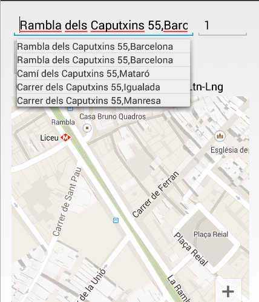

AYUDA
Resumen
Esta aplicación de android trata de resolver el problema del punto medio geométrico de un número determinado de puntos. Se le ha encontrado una aplicación práctica, para resolver el problema de un grupo de amigos que quieren juntarse en un punto medio.
Esta basado en la web http://www.geomidpoint.com/
Inicio de la aplicación
La aplicación nos muestra el siguiente menu nada más empezar:
Donde se distinguen 4 areas:
El título GeoMidPoint de la aplicación.
La barra de busqueda de direcciones.
La linea de botones de acciones
El mapa de google maps embebido.
Inserción de un punto
Para añadir un nuevo punto o localización al mapa, hay dos formas:
Buscando en la barra de direcciones poniendo la dirección completa o parcial de la persona. Según vayamos rellenando la dirección nos irán apareciendo distintas selecciones.
Pulsando en la calle dentro del google maps.

Después
añadimos el punto con el icono 
De esta forma seguimos añadiendo puntos en el mapa, puntos azules en el mapa. Y el punto geométrico sería el icono naranja.

Borrado de un punto
Para borrar un punto lo que tenemos que hacer es elegir uno de los puntos seleccionados y dar al botón

Si no tenemos seleccionado ningún punto, se borran todos los puntos del mapa.
Lugares que visitar
Cuando
el centro geométrico ha sido encontrado, se le da la posibilidad a
los usuario de conocer los lugares que pueden visitar cercanos a ese
punto. Para acceder a esa vista hay que pulsar el botón 
En la nueva vista nos aparecen las direcciónes y lugares de los sitios seleccionados, en este caso cerca de siguenza:

Podemos elegir entre diversas categorias ( bares, cafes, casinos, cines, teatros, museos, pubs y restaurantes). La búsqueda esta hecha a traves del api de google places y está hecha por cercanía.